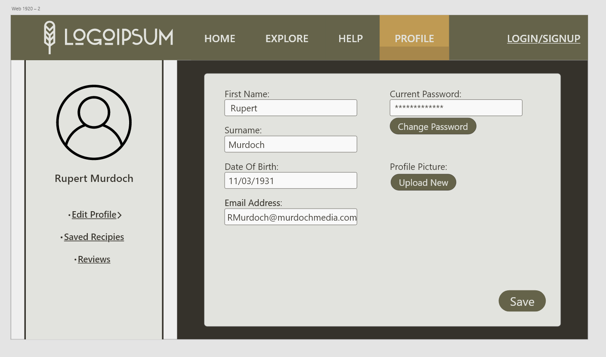
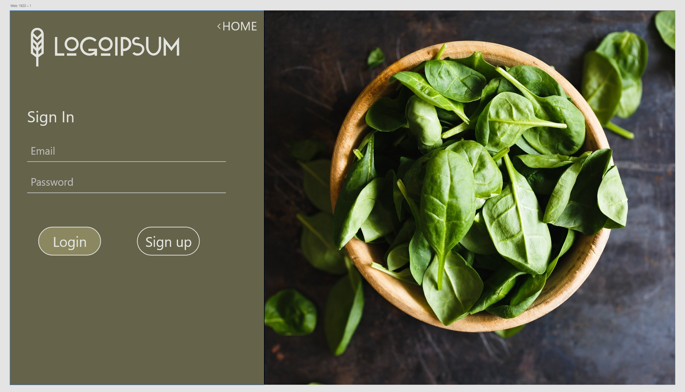
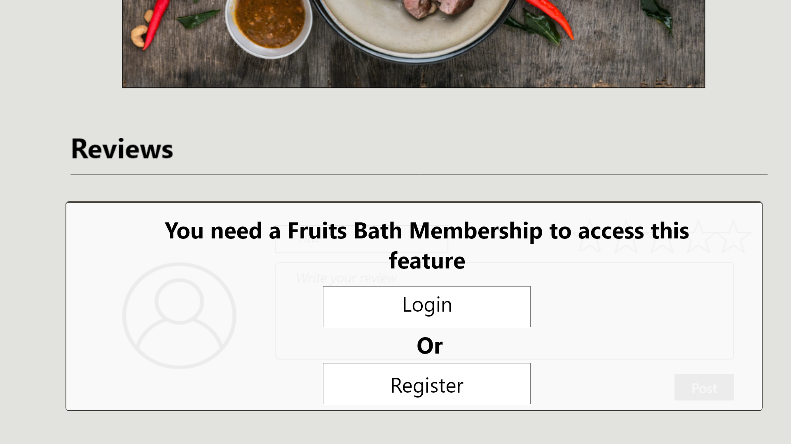
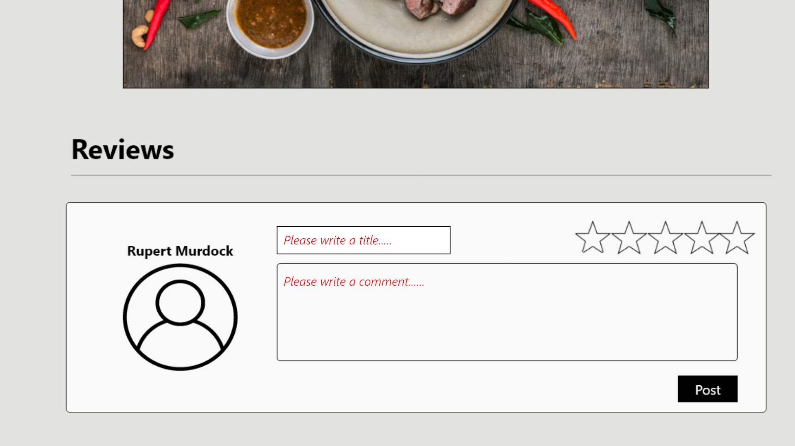
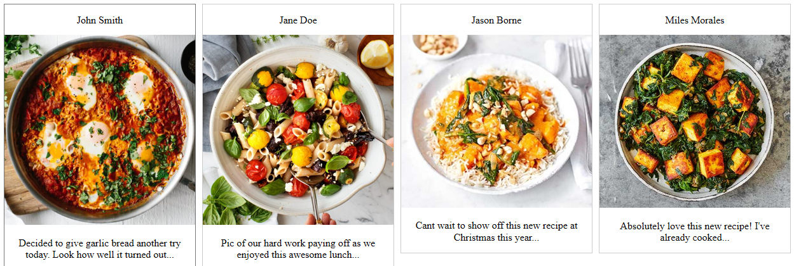
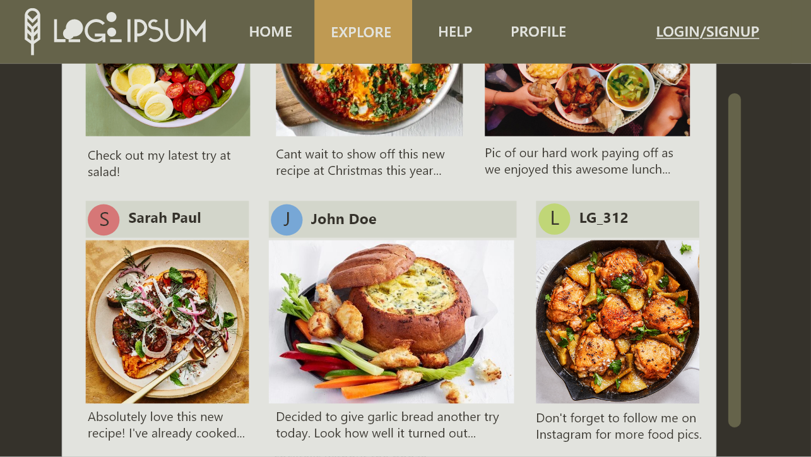

Extended Viable Features
EVF 1: Membership system
User stories
Ariel enjoys cooking food and has used Fruit Bath before, after opening on her laptop in the she has a look at the website once more for recipes and notices she can cerate an account. Ariel then continues through to the sign up page and creates her account, after creating her account she saves a few recipes to her cookbook. The next day, Ariel going online to Fruit Bath again and logs in, once logged in she adds a review, commenting on the dish she made last night from the website.
Design Diagrams
 Explanation
The membership system allows users to create a unique account for the website. When making an account for the first time, users register with their personal details, such as name and email. Users can select a profile icon distinguishing them from other users.
As a member, users gain access to other features on the site, such as leaving a review and rating on a recipe for other users to see or saving recipes they like for easy access later in a personalised ‘cookbook’.
Some of the website’s features are not available to anonymous users who have not registered a membership with the website.
Validation Criteria
 EVF 2: Images section
User stories
Ralph has just cooked his first home cooked meal in his life, using a recipe he found on the Fruit Bath website. He's proud of his achievement and can't wait to dig in, but first, he wants to share his achievment with others. Taking an picture of his dish, he uploads the image to the Fruit Bath images section! He leaves a decription describing his achievment, and within minutes other members of the Fruit Bath website are leaving comments on his image! The positive comments inspire him to continue cooking at home. Later, Ralph decides to check the images section. He see's images from other members, depicting dishes made using recipes from the website. He logs into his account and leaves a positive comment on particularly stunning dish, encouraging that user to continue cooking.
Design Diagrams
 Explanation
The images feature allows users to upload images they have taken to the website. Images would be food related, preferably of dishes made useing recipes taken from the Fruit Bath website.Users can leave a description on any images they post, detailing what the image is about or any notes or feelings about the dish or image. A link to the recipe used would be pinned to each image posted.
Users can leave comments on any images posted by other users. Selecting an image will show all comments posted on that image. When writing a comment the users profile picture will be attached.
Validation Criteria
EVF 3: Ingredients Scale
User stories
Sally is having guests over for dinner and she's cooking. She looks up a recipe on her favourite recipe site and begins to cook. Her guests arrive, but sally realises she followed the recipe too closley and only cooked enough for 1 person! Later, sally is hosting another dinner party, but this time she uses Fruit Bath's ingredient scale. She brings up her recipe and choice and sets the scale to match the number of guests. The website automatically adjusts the recipe to fit the number of dinner guests, changing the amount of ingredients, time, and budget. This allows Sally to better plan and budget her cooking for the party ahead. When the guests arrive Sally has cooked enough food to satisfy everyone at the table!
Design Diagrams
Explanation
Each recipe will have an ingredient scale attached. After selecting a recipe users will be able to edit the ingredient scale.The scale automatically edits the amount of ingredients required for a recipe, to account for any number of people a user is cooking for. If the recipe is to be cooked for 4 people, the scale is set to 4 and the recipe will call for 4 times the amount of ingredients than without scale. The scale will also change the estimated price and cooking time of each recipe.